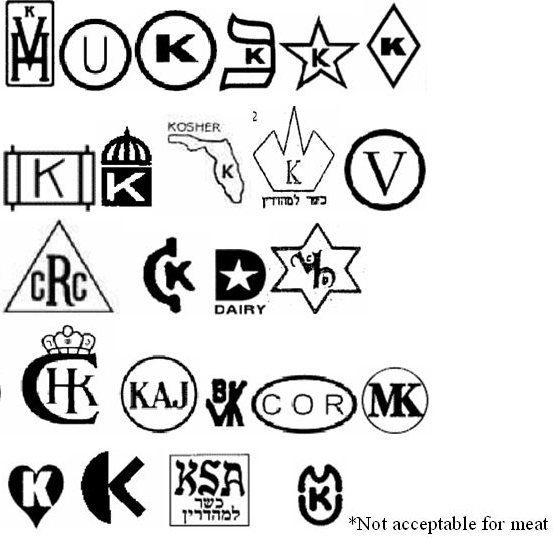

Kosher
At MIT, you're expected to work hard...so it's always nice to kick back and relax every once in a while. Here on Burton 2, we do a study break hosted each week by either one of the suites, or the GRA (Graduate Resident Advisor). During these study breaks we catch up with one another, grab a bite to eat, and sometimes watch a movie.
Shopping Kosher
Appoximately a quarter of the residents of Burton 2 maintain a kosher diet. If your suite would like to plan a study break that is partly or fully kosher, here's a quick guide to help.
Q: What is kosher?
A: Maintaining a kosher diet means following Jewish dietary law. The rules originate in the Torah, but have been greatly expanded by scholars over the years.
Q: How do I know if something is kosher?
A: Lots of items on a grocery store shelf are kosher. Many agencies exist to approve products as kosher. The food is not blessed, but rather the entire manufacturing process is routinely inspected to ensure that everything is produced according to Jewish law. Approved foods bear symbols of the certifying agency on the package, often on the front or at the end of the ingredients list.
The following is a list of symbols that you may see on kosher products in the area. The first five on the top row are the most common ones in Boston. Other symbols do exist, but they are not always considered valid; if you have any questions about symbols not on this list, feel free to ask about them. In general, a "K" on a product is not a valid certification that it is kosher (Kellogg's products with a K on the front of the box are kosher).
In addition to certified packaged products, all fresh fruits and vegetables are kosher.

Q: What are the letters and words next to a kosher symbol?
A: Since meat products and milk products cannot be eaten together, it is important to know what ingredients a product contains. Therefore, you'll often see the following next to a kosher symbol:
D: The product is Dairy and contains some milk ingredient
M/Meat: The product contains meat
Pareve: The product is neither dairy nor meat
In general, study breaks are dairy or pareve (if for no other reason, kosher meat isn't easy to find in Cambridge).
Q: How can I put together a kosher study break?
A: Putting together a kosher study break isn't that difficult. When you go shopping, look for foods and drinks with the symbols seen above. If you want to bake (many mixes and pre-made doughs are kosher), email out the floor and one of the kosher-observant residents will help with the baking process.
When buying eggs for baking, please buy white and not brown eggs. Eggs need to be individually inspected once cracked, and white eggs are far more likely to be kosher.
From everyone who keeps kosher on Burton 2, thanks for helping us enjoy study break!